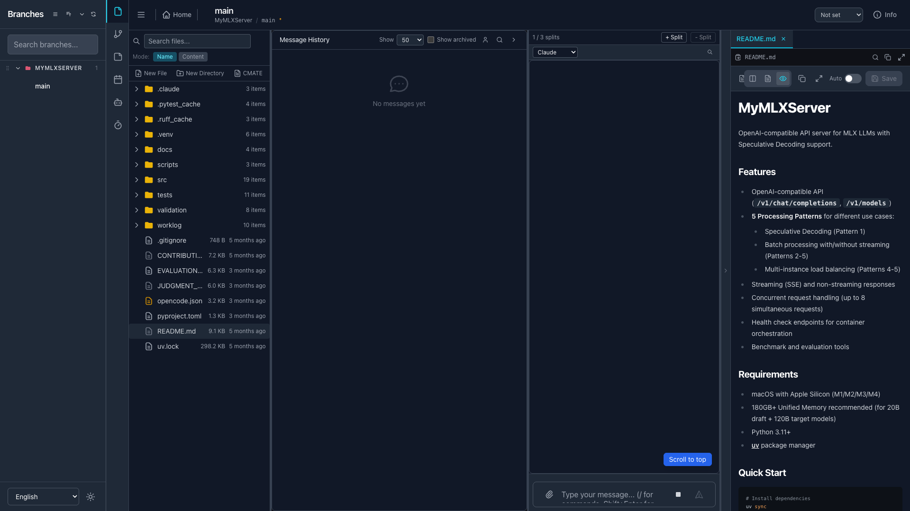
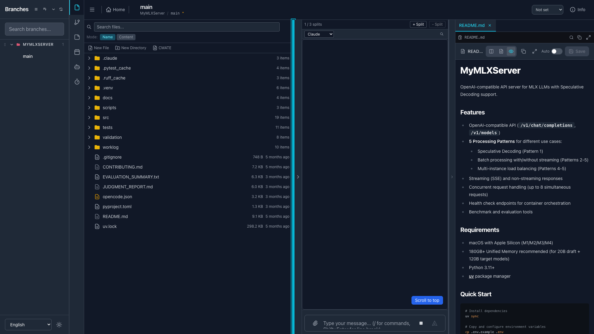

Issue #732 実機受入テスト報告書
fix(layout): missing min-w-0 causes horizontal overflow, hiding FilePanel off-screen (#730 follow-up)
テスト概要
サマリー
中核検証結果: 修正前は file-panel-pane が left=2473, right=3160（viewport 1920 を大きく超え画面外）だったのに対し、
修正後は left=1522, right=1920 で viewport 内に完全表示。横スクロール溢れ（scrollWidth > clientWidth）も解消。
受入条件 網羅マトリクス
| # | 受入条件 | 対応TC | 判定 |
|---|
| 1 | PC版1920pxでFiles→ファイルクリックでFilePanelがviewport内 | TC-001 | PASS |
| 2 | getBoundingClientRect().right <= window.innerWidth | TC-001 | PASS |
| 3 | desktop-layout の幅がviewport内 | TC-002 | PASS |
| 4 | History表示/非表示・ActivityPane幅変更でもviewport内 | TC-003, TC-004 | PASS |
| 5 | ターミナル/履歴の表示が壊れない（既存挙動維持） | TC-005 | PASS |
| 6 | モバイル変更なし | TC-006 | PASS |
| 7 | lint / tsc / test:unit / build 全PASS | TC-006 | PASS |
テストケース詳細
TC-001 ファイル選択時に FilePanel が viewport 内に表示される PASS
操作viewport 1920×1080 で worktree を開き Files 選択 → README.md をクリック
エビデンス
file-panel-pane: left=1522, right=1920, width=398, visible=true
right(1920) <= window.innerWidth(1920) ✔
horizontalOverflow: false (scrollWidth=clientWidth=1920)
TC-002 desktop-layout の幅が viewport 内に収まる PASS
操作TC-001 の状態で desktop-layout を測定
エビデンス
desktop-layout: left=272, right=1920, width=1648
272 = サイドバー(224) + ActivityBar(48)
修正前の 2825px 溢れは解消 ✔
TC-003 History 非表示でも FilePanel が viewport 内 PASS
操作history-pane-collapse-button で History 折りたたみ → 測定
エビデンス
historyVisible: false
file-panel-pane: left=1262, right=1920, width=658（領域拡大しても right=1920 維持）✔
horizontalOverflow: false
TC-004 ActivityPane 幅変更でも FilePanel が viewport 内 PASS
操作ActivityPane resizer をドラッグし幅 18% → 40.75%（672px）に拡大 → 測定
エビデンス
activity-pane-slot: width=672
file-panel-pane: left=1452, right=1920, width=468 ✔
desktop-layout: right=1920, horizontalOverflow: false
TC-005 既存挙動（ターミナル/ファイルパネル表示）が壊れない PASS
操作ファイルを開いた状態で terminal-pane / file-panel-pane を確認
エビデンス
terminal-pane: left=1116, right=1518, width=402, visible=true
file-panel-pane: visible=true
両ペインが正常に並列表示、レイアウト崩れなし ✔
TC-006 静的検証（モバイル経路非変更・品質ゲート） PASS
操作git diff 確認 + 品質コマンド
エビデンス
モバイル経路 (~L1590 flex-1 min-h-0) は diff に含まれない ✔
lint: pass / tsc: pass / test:unit: 6700 passed / build: pass ✔
unit: 'desktop layout containers carry min-w-0 (Issue #732)' PASS ✔
スクリーンショット

TC-001/TC-002: README.md を開いた状態。FilePanel (right=1920) が viewport 内に表示。

TC-004: ActivityPane を 672px に拡大しても FilePanel (right=1920) は viewport 内を維持。
結論
Issue #732 の全受入条件（7件 / TC 6件）が PASS。WorktreeDetailRefactored.tsx の外側 2 flex コンテナ（L1740 主因 / L1763 防御的補強）への min-w-0 追記により、Flexbox min-width: auto 既定による横溢れで FilePanel が viewport 外へ押し出される不具合は解消された。既存のターミナル/履歴表示・モバイル経路への退行はなし。
テスト環境（port 3010）はテスト後に停止・ポート解放済み。本番インスタンス（port 3000）は非干渉。